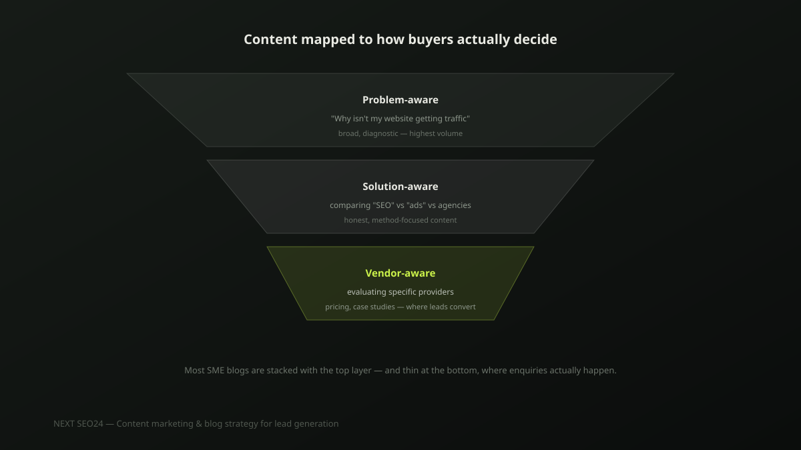

Content marketing and blog strategy for lead generation, not just rankings
A blog that gets traffic but no enquiries isn't working — it's just generating vanity metrics. Most content advice stops at "publish consistently" and never addresses the actual gap: content that ranks but doesn't convert. Here's how to map content to how your buyer actually decides, and structure a publishing plan a small team can genuinely sustain.
Why "more traffic" isn't the same as "more leads"
A post that ranks for a broad, high-volume term can pull thousands of visitors who were never going to buy — someone researching "what is SEO" for a school assignment isn't a lead, no matter how the traffic chart looks. The content that actually generates enquiries targets a narrower, more specific question asked by someone already close to a decision. Optimizing purely for traffic volume, without asking who that traffic is, is the single most common reason a blog gets visits but not business.
Map content to how your buyer actually decides
Every buyer moves through roughly three stages before they contact you, and each stage needs a different kind of content:
- Problem-aware. They know something's wrong but not the fix. "Why isn't my website getting any traffic" — broad, diagnostic content that builds trust before they know your service name.
- Solution-aware. They now know the category of fix — "SEO," "backlinks," "local SEO" — and are comparing approaches. Content here should explain the method honestly, including its limits and timeline, not just sell it.
- Vendor-aware. They're evaluating specific providers. This is where pricing pages, case studies and process explanations earn the click that closes — content most SME blogs skip entirely in favour of more top-of-funnel posts.
Most SME blogs are stacked almost entirely with problem-aware content because it's the easiest to rank for volume. The fastest fix for a blog with lots of traffic and few leads is often simply publishing more vendor-aware content — the stage that's usually thinnest and closest to an actual enquiry.
A publishing cadence a small team can actually sustain
Two genuinely thorough, specific posts a month will outrank and outconvert eight generic ones, and it's a pace a two- or three-person marketing team can maintain for years rather than burn out on after two months. Google's Helpful Content system specifically targets content produced primarily to rank rather than to help — a rushed, thin post written to hit a quota is exactly the pattern it's built to demote. Consistency you can sustain beats a sprint you can't.
Every post needs one clear next step
"Contact us" at the bottom of a page is not a call to action — it's a formality nobody reads. A working call to action names the specific next step and lowers the friction to take it: a direct WhatsApp link pre-filled with context about what the reader just read, a short 3-field enquiry form, or a link to the exact service page relevant to the article's topic. Match the CTA's specificity to the content — a problem-aware diagnostic post should offer a free audit, not a hard sales pitch.
Update your best old posts before writing new ones
Content decays — pricing goes stale, screenshots go out of date, a competitor publishes something more current, and rankings quietly slip. Before adding a new post to the queue, check Search Console for pages that ranked well six to twelve months ago and have since dropped. Refreshing one of those with current information, a stronger structure and a real call to action is often faster to show results than a brand-new post starting from zero authority.
Common lead-gen content mistakes
- Writing for search volume alone. A high-volume keyword with no buying intent behind it fills a traffic chart, not a pipeline.
- No vendor-aware content at all. Skipping pricing transparency, process breakdowns and case studies leaves the highest-intent visitors with nowhere to go but a competitor.
- One generic CTA on every page. The same "Contact us" button regardless of what the reader just learned ignores where they actually are in the decision.
- Never revisiting old content. Publishing forever forward while ignoring decaying rankings on existing pages wastes the authority those pages already built.
Frequently asked questions
How often should a small business actually publish blog content?
Two genuinely thorough, specific posts a month will outperform eight generic ones for a small team, both in search rankings and in actual leads. Consistency matters more than frequency — a realistic, sustainable cadence you can maintain for a year beats a burst of ten posts followed by six months of silence.
Should blog content be gated behind a form to capture leads?
Generally no, for most SME blog content. Gating reduces the traffic and backlinks that make content rank in the first place, and Google can't index gated content at all. Keep articles open, and put the conversion point at a clear, low-friction call to action inside the content instead — a WhatsApp link or short enquiry form works better than a gate for most local businesses.
Is it better to write new posts or update old ones?
Both, but check your existing content first. A post that ranked well a year ago and has since slipped is often faster to fix than a new post is to rank from zero — refreshing it with current information, better structure and a stronger call to action frequently recovers lost rankings within weeks.
Want a content plan built around actual leads, not just traffic?
Tell us about your business and sales process — we'll map your content funnel and show you exactly where the gaps are.
Chat on WhatsApp →